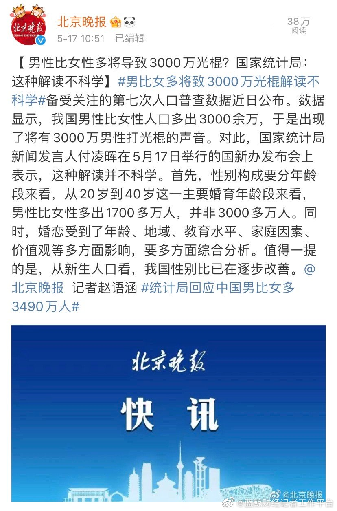

统计局的参照系让迷惑，育龄期女性范围是15-49岁，算男光棍的数量时就变成20-40岁范围？
@蓝鲸财经记者工作平台:
【 男性比女性多将导致3000万光棍？国家统计局：这种解读不科学】#统计局回应中国男比女多3490万人#
备受关注的第七次人口普查数据近日公布。数据显示，我国男性比女性人口多出3000余万，于是出现了将有3000万男性打光棍的声音。对此，国家统计局新闻发言人付凌晖在5月17日举行的国新办发布会上表示，这种解读并不科学。首先，性别构成要分年龄段来看，从20岁到40岁这一主要婚育年龄段来看，男性比女性多出1700多万人，并非3000多万人。同时，婚恋受到了年龄、地域、教育水平、家庭因素、价值观等多方面影响，要多方面综合分析。值得一提的是，从新生人口看，我国性别比已在逐步改善。@北京晚报
备受关注的第七次人口普查数据近日公布。数据显示，我国男性比女性人口多出3000余万，于是出现了将有3000万男性打光棍的声音。对此，国家统计局新闻发言人付凌晖在5月17日举行的国新办发布会上表示，这种解读并不科学。首先，性别构成要分年龄段来看，从20岁到40岁这一主要婚育年龄段来看，男性比女性多出1700多万人，并非3000多万人。同时，婚恋受到了年龄、地域、教育水平、家庭因素、价值观等多方面影响，要多方面综合分析。值得一提的是，从新生人口看，我国性别比已在逐步改善。@北京晚报
- 